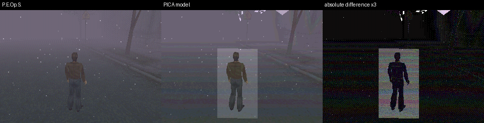
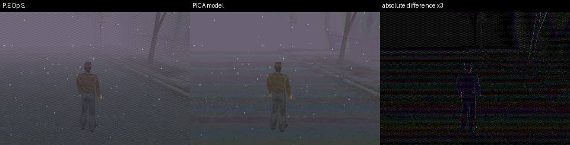
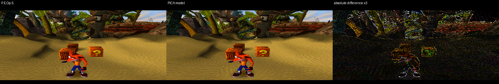
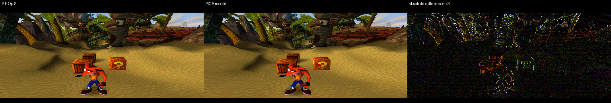
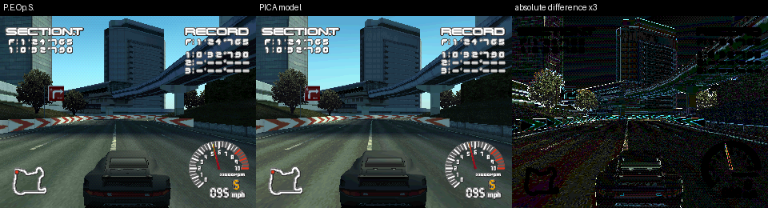
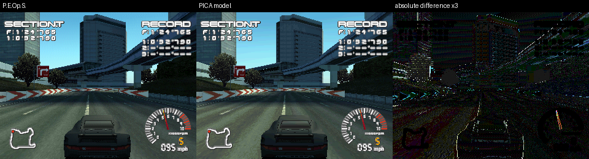
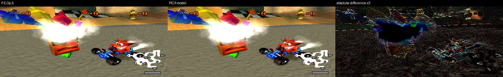
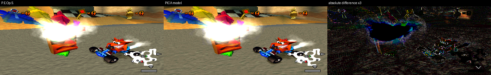
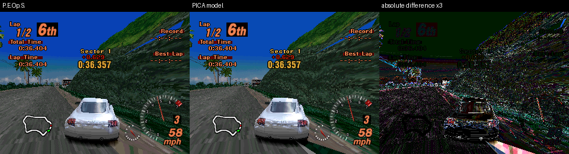
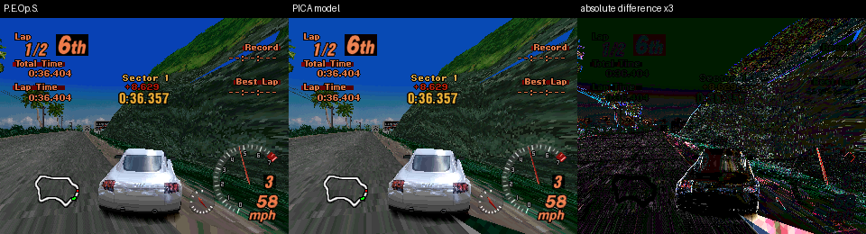

Same GPU commands, reference versus PICA model. Frame 60 after loading each supplied state.
Before fixes · reference / PICA model / difference ×3

After fixes · reference / PICA model / difference ×3

Before fixes · reference / PICA model / difference ×3

After fixes · reference / PICA model / difference ×3

Before fixes · reference / PICA model / difference ×3

After fixes · reference / PICA model / difference ×3

Before fixes · reference / PICA model / difference ×3

After fixes · reference / PICA model / difference ×3

Before fixes · reference / PICA model / difference ×3

After fixes · reference / PICA model / difference ×3

| Pixels with a channel error >24 | Before | After |
|---|---|---|
| Silent Hill | 11.84% | 0.52% |
| Crash Bandicoot | 8.63% | 4.59% |
| Ridge Racer Type 4 | 6.67% | 2.85% |
| CTR | 12.46% | 9.32% |
| Gran Turismo 2 | 12.67% | 9.14% |
Fixed polygon sampling, transparent additive mask damage, and texture STP writes. Silent Hill’s rectangular halo disappears.
The STP pass adds submissions: roughly +120 per host frame in Silent Hill and +65 in GT2. Hardware speed and PICA precision remain unverified. Dithering, exact clipped interpolation, and some mask/blend combinations remain unfinished.